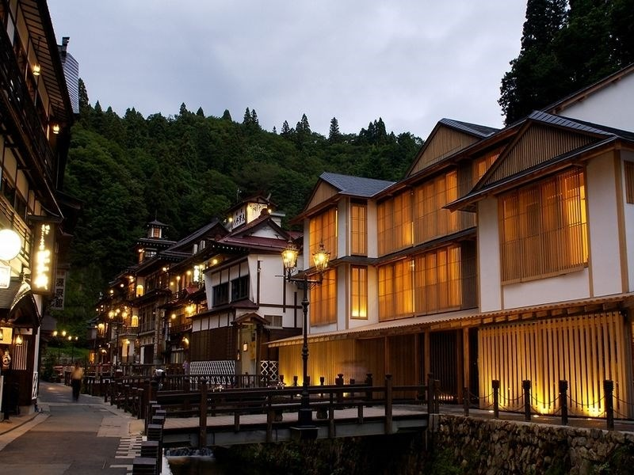
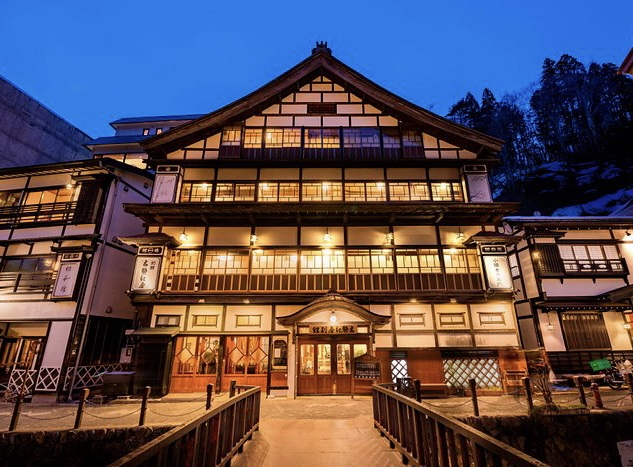

Hotel Recommendations
There is a total of 13 Japanese ryokans in Ginzan Onsen. The two most popular ryokans are Notoya Ryokan and Fujiya.
Due to its extreme surge in popularity among tourists, staying at Ginzan Onsen can be difficult to nearly outright impossible to stay at, depending on the time of the year. Most of these ryokans requires prebook 8 months ahead.
If you wish to stay here during the snowy months of December, January, and February then you generally must reserve at least one year in advance to get a room along the main street. Most ryokan here are family owned and will only accept reservations via direct phone call that must be made in Japanese. We recommend having a Japanese friend making this call for you, this is how most foreigners who live in Japan get reservations at these places.
Updates: 2023-10-11 Views: 27.9k

Notoya Ryokan
Location rating :⭐⭐⭐⭐⭐
106 reviews from verified guests
Price Range : 25,300 - 28,600 yen per guest per night. The price includes one dinner and one breakfast.

Fujiya
Location rating :⭐⭐⭐⭐⭐
98 reviews from verified guests
Price Range : 33,000 - 68,000 yen per guest per night
The price includes one dinner and one breakfast.

Kosekiya Annex
Location rating :⭐⭐⭐⭐⭐
78 reviews from verified guests
Price Range : 28,000 - 63,000 yen per guest per night
The price includes one dinner and one breakfast.